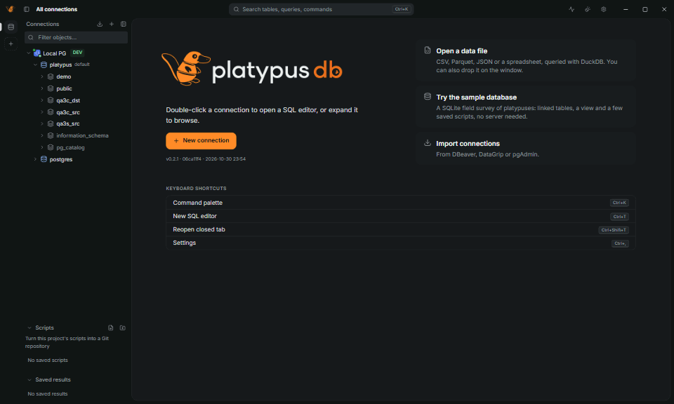
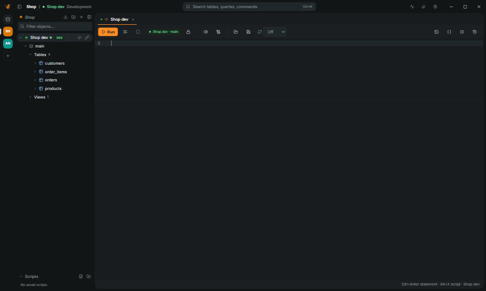
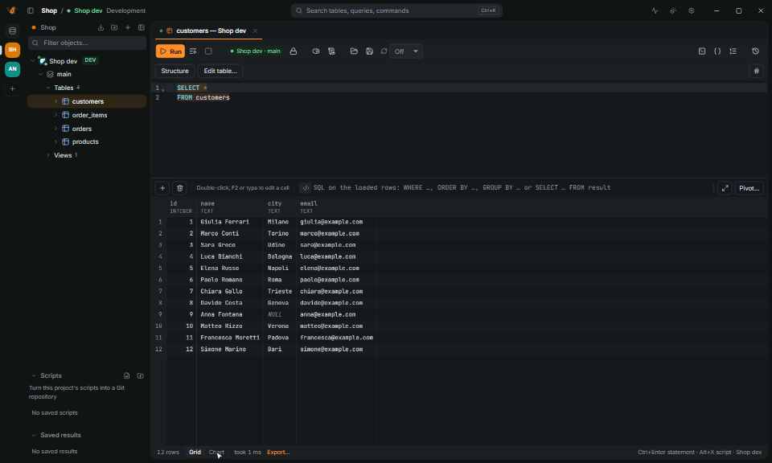
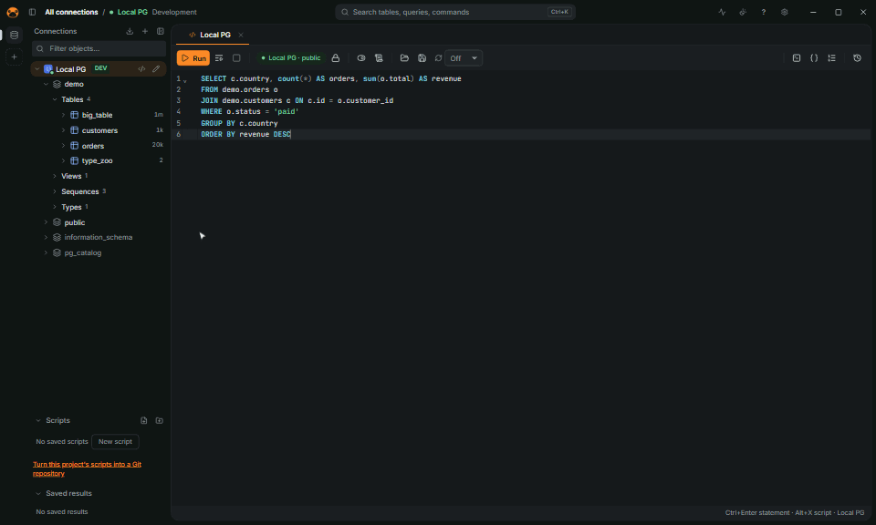

Open source SQL client
Small app.
Every database.
PlatypusDB queries, browses and edits PostgreSQL, MySQL, SQL Server, Oracle, SQLite, DuckDB and a dozen more, from a window that opens in half a second.
| city TEXT | revenue NUMERIC | orders INTEGER | |
|---|---|---|---|
| 1 | Roma | 2,740.50 | 7 |
| 2 | Napoli | 2,712.30 | 6 |
| 3 | Padova | 2,148.90 | 5 |
| 4 | NULL | 1,720.00 | 4 |
| 5 | Torino | 1,431.80 | 4 |
| 6 | Genova | 1,002.40 | 3 |
| 7 | Milano | 794.30 | 2 |
- PostgreSQL
- MySQL
- SQL Server
- Oracle
- SQLite
- DuckDB
- ClickHouse
- Snowflake
See it work
From the first query to production.






What's inside
The whole toolbox,
none of the weight.
-
See why a query is slow
Explain analyze runs the statement for real times, rolls back what it changed, tints each step by its share of the time and suggests an index.
-
Production stays production
The window frame takes the connection's color; production opens in manual commit and confirms every change.
-
A million rows, no wait
A canvas grid that reads a page at a time.
178fps
-
Edit, then save all or nothing
The SQL is shown first, and every save leaves an undo script.
-
Ready for AI agents
Every MCP client can use your saved connections, read only by default. Passwords stay in the keychain.
-
Move data anywhere
Import and export CSV, JSON, Parquet and Excel, streamed to disk or to S3. Copy a table or a whole schema between any two databases.
-
Know the schema
Notes and tags on tables and columns, the database's own comments, a table editor that shows its
ALTER TABLEfirst, and docs as one HTML file with an ER diagram.
Databases
Twenty databases, one client.
Native drivers in Rust, plus ADBC and ODBC for the rest. Large drivers download on first use, checked against their SHA-256.
- PostgreSQL
- MySQL
- MariaDB
- SQL Server
- Oracle
- ClickHouse
- SQLite
- DuckDB
- Turso / libSQL
- MongoDB
- Snowflake
- BigQuery
- Databricks
- Trino
- CockroachDB
- YugabyteDB
- TimescaleDB
- Supabase
- Neon
- IBM Db2
- ADBC drivers
- ODBC sources
How each database connects
| Database | Connects through | Notes |
|---|---|---|
| PostgreSQL | native protocol | Several databases per connection, partitions, PostGIS, arrays and composite types |
| MySQL, MariaDB | native protocol | NULL |
| SQL Server, Azure SQL | TDS | TOP (n), [names], several result sets |
| Oracle | Oracle Instant Client, downloaded on first use | PL/SQL blocks, real cancel, navigator, DDL |
| ClickHouse | HTTP interface, Arrow results | Browsed, queried and designed; no data editing in the grid |
| SQLite | embedded | NULL |
| DuckDB | embedded, Arrow results | Also opens CSV, JSON, Parquet and Excel files as databases |
| libSQL / Turso | Hrana over HTTP | Token in the password or in authToken |
| MongoDB | official driver | mongosh syntax; no transactions, explain or data editing |
| CockroachDB, YugabyteDB, TimescaleDB, Supabase, Neon, AlloyDB | PostgreSQL driver | Profiles with their default port, user, database and SSL |
| Snowflake, BigQuery, Databricks, Trino | ADBC driver, downloaded on first use | Queries, results, navigator and completion; no data editing, explain or manual commit yet |
| Any database with an ADBC driver | the ADBC driver library you choose | Its URI and options as the driver documents them |
| IBM Db2 | IBM's ODBC driver, installed on first use | Windows |
| Any ODBC driver or DSN | the system's ODBC driver manager | Windows |
Performance
Light enough to leave open all day.
Rust and the system's web view: no JVM, no bundled browser. Measured on Windows 11, Ryzen 7 9700X; method in BENCHMARKS.md.
- from start to an interactive window
- 430ms
- memory at rest with one connection
- 130MB
- scrolling a million rows
- 178fps
- 5 million rows to Parquet, 31 MB peak
- 3.2s
Compare
A fraction of the size.
Official Linux downloads, measured on 29 October 2026.
| Measure | PlatypusDB | DBeaver CE | DataGrip | TablePlus | Beekeeper Studio |
|---|---|---|---|---|---|
| Runtime | Rust, the system's web view | Java, JRE bundled | Java, JetBrains Runtime bundled | Native (GTK on Linux) | Electron |
| Linux download | 19.5 MiB | 122 MiB | 1,047 MiB | 60 MiB | 346 MiB |
| On disk | 46 MiB | 206 MiB | not measured | 180 MiB | 1,105 MiB |
| License | AGPL-3.0 | Apache 2.0 | Proprietary | Proprietary | GPLv3 |
PlatypusDB 0.2.0, DBeaver CE 26.2.3, DataGrip 2026.2.6, TablePlus 2.2.0, Beekeeper Studio 6.2.0. Start and memory side by side are still to be measured.

Free and open source.
No trial, no account.
Download the installer for your system. The app updates itself.
- Windows
.exe.msi - macOS
.dmg - Linux
.AppImage.deb.rpm